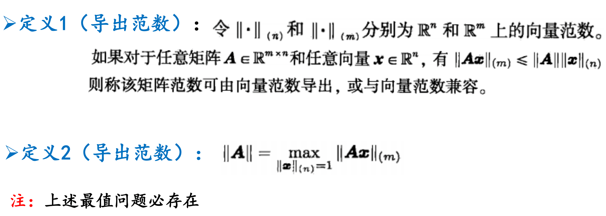

最优化导论
线性代数
向量（默认指列向量）
向量从数组-》坐标系中箭头的本质：数组中保存的基的系数x坐标系的基向量-》从原点指向目标位置的箭头（因为都是从原点出发，所以只考虑端点也可以）
线性无关的向量集：两种定义
- 除非系数全为0，否则他们的线性组合永不为0
- 不存在某一向量可被其他向量的线性组合表示
线性组合
张成子空间：向量集中任意向量之间所有线性组合的集合。张成子空间中的一组线性无关向量则称为子空间的一组基。
线性变换
线性代数中的变换遵守两个原则，1. 所有直线还是直线（所有空间中的向量变换后线性组合系数依然不变，实质上是对基向量的变换实现了所有向量的变换。）、2. 原点不动。[若满足1不满足2则为仿射变换]
相似
（基变换） 若存在非奇异矩阵T，令$A=T^{-1}BT$，则A与B相似。相似矩阵表示相同线性变换。证明：
同一个空间可以用不同基向量形成的坐标系来描述。假设B是默认坐标系里的某种线性变换，A则是新坐标系下对空间相同的线性变换。
可以看出当x用新坐标系描述的某向量，则Tx相当于默认坐标系下的该向量。而T就相当于将新坐标系变换到默认坐标系，T的逆则是将默认坐标系再变回新坐标系。
一句话总结：将陌生坐标系下的向量，左乘T翻译为默认坐标系下的向量，所以左乘B得到默认坐标系下发生变换得到的结果向量，再左乘T的逆，将结果向量翻译成陌生坐标系下的结果向量。所以$A=T^{-1}BT$，陌生坐标系下的线性变换A与默认坐标系下的线性变换B相同。
矩阵
直观理解
矩阵本质是一组基。这组基是单位正交基经过线性变换后得到的向量。矩阵因为包含了这组变换后的基，可以表示这次线性变换。类似
现在看三维的单位矩阵
为什么$Ix=x$？
因为右侧默认的三维空间基向量就是I的列向量，也即单位正交基。
看一个n维矩阵
$a_i$均为长度为n的列向量，表示某单位正交基$e_i$在经过A表示的变换之后的基向量在空间中的位置（向量$a_i$中的数字为用单位正交基表示该位置的线性组合系数）。
矩阵相乘，如AB=C，可理解为B中每列所表示的基向量都经历了A所表示的线性变换后，该列向量成为新的能够表示先B后A的两次线性变换的基向量保存在C中。
行列式：$detA、|A|$
首先定义在原本空间$\mathbb{R}^n$中由单位正交基作为边，定义的单位大小空间（在2维空间中是单位正方形；3维空间中是单位立方体）。经过A的线性变换后得到的新空间$\mathbb{R}^m$的单位大小空间是由A中保存的新空间的基向量作为边定义的。
而detA的值（绝对值）就是新空间$\mathbb{R}^m$的单位大小空间在原本空间$\mathbb{R}^n$中的大小，也表示空间大小变化的比例。
detA=0表示空间降维，m<n；否则m=n。若detA<0，则还表示新空间的定向发生变化（相当于发生镜面对称：在二维世界相当于平面翻转成原本的背面；三维世界相当于从右手螺旋镜面为左手螺旋）
奇异矩阵——该方阵A不为满秩——detA=0——降维的线性变换——A的逆矩阵不存在
detA=0时A能够降维，将某一维上的所有向量全部降到同一个点。但是任何函数，包括线性变换，不能将某一个点升维，变为新维度上的无限个点。所以逆矩阵不存在。
A的列空间就是A的列向量张成的空间，即Ax，其中x为任意向量。
A的零空间，又称为核，是Ax=0的解空间，即所有在线性变换后落到原点的向量的集合。
秩
矩阵A中线性无关列的最大数目。rank(A)表示这个变换后的空间有多少维度。
保秩运算有：
a)矩阵的初等变换；
b)矩阵中加入一列，且该列式列向量组的线性组合；
c)矩阵乘以可逆矩阵
d) 转置、旋转、镜像、……
列空间与零空间的关系
【来自MIT公开课：以 2020 年的全新眼光审视线性代数】矩阵转置：$A$的列空间是$A^T$的行空间。$A^T$的列空间是$A$的行空间。
上式中所有$x$的集合为A的零空间，A的零空间中任意向量都与A的任意行向量正交，所以称A的零空间与A的行空间正交，又因为转置的性质，所以有：
根据零空间定义，所以A的行空间中任意向量x都有Ax=b，b不为0。b的全体集合为A的列空间。
线性方程组
$Ax=b$
指找到某向量x能经过A变换为b；或者找到b经过$A^{-1}$变换后的向量x。
特解+基础解系：对A的0空间进行平移(Manifold,流形)
向量的内积与范数（欧氏空间）
两向量内积可以刻画两向量相差的角度，内积函数具有非负性、对称性、可加性、齐次性。
欧式内积为$
复空间内积定义与实空间不同。
【来自线性代数的本质】向量点积：
$u\cdot v=|u||v|cos\theta$可以理解为v向u做投影，投影与u相乘；或者理解为将二维平面进行降维的线性变换U——因为$[1,0]$投影到u所在直线上的长度为$cos\theta$，因为$[0,1]$投影到u所在直线上的长度为$sin\theta$，而$\frac{u_1}{u_2}=|u|\frac{cos\theta}{sin\theta}$所以这个变换U相当于把整个二维平面投影到u所在的直线上然后进行|u|倍缩放。
引申到n维向量uv点乘，可以理解为n维空间中的v向量投影到u所在直线然后缩放，输入为n维，输出为1维。
向量范数
范数可以刻画向量长度。范数有非负性、齐次性、三角不等式。欧式范数（2范数）$||x||=\sqrt{
1范数：所有分量绝对值之和
2范数：所有元素平方和的平方根（欧氏距离）
inf-范数（无穷范数）：元素绝对值中最大的一个
p范数：2范数的平方、开平方改为p次方、开p次方(p>=1)
柯西-施瓦兹不等式
叉积
两向量作为列向量组合成一个矩阵，叉乘得到两向量平面的法向量（右手定则确定方向），长度等于该矩阵行列式。【一般只考虑3维情况】
叉乘计算方法证明：
三维空间下，将任意向量x投影到法向量直线上，长度再与v和w夹成的平行四边形面积相乘，等于矩阵$[\vec x,\vec v,\vec w]$的行列式，也即这三个向量夹成的平行六面体的体积。只要定义$\vec{v} \times\vec{w}$表示其长度为平行四边形面积，根据空间定向有其正方向的法向量则得到：
四维下：vw也依然是一个法向量。需要解决非方阵行列式。$det(A_{3\times 4})$
矩阵范数与其他性质
矩阵范数
F范数：所有元素平方和的平方根
1范数：各列中最大的列元素绝对值之和
2范数：$\sqrt \lambda，\lambda $是$A^HA$的最大特征值。（AH是共轭转置矩阵，对每个元素取共轭复数，再转置。A全为实数时AH等于A的转置。）
无穷范数：各行中最大的行元素绝对值之和
导出范数：（如谱范数）

特征值
该线性方程组要有非零解则需
按定义展开行列式则得到矩阵A的特征多项式，多项式的根则为特征值（若根为虚数，则一般对应旋转变换，行列式不为0）
特征向量矩阵P
实对称矩阵
实对称矩阵特征值全是实数；反对称矩阵特征值为0或纯虚数。
实对称矩阵A可以被特征分解为
所以A相当于对原本空间只在正交的特征向量方向上缩放而不旋转空间。
正交矩阵
$Q^T=Q^{-1}$，它的转置矩阵等于它的逆矩阵。该方阵的列向量都是标准正交(orthonormal)向量。
正交投影
子空间与其正交补空间可以张成全空间。
正交分解
正交投影算子P，能使所有Px与x-Px正交
二次型
正定二次型/半正定/负定
Q是否为正定矩阵的判定方法：
Q行列式小于等于0，则不可能正定
特征值均为正
【正定的充要条件】西尔维斯特准则（只能判断是否正定，半正定无法判断。）：
矩阵的各阶顺序主子式都大于0i阶主子式：选定1到n的i个整数作为下标，从原始行列式取都属于这i行与这i列的元素（行列交汇处元素），组成新的i阶行列式。
各阶顺序主子式：沿原矩阵对角线从左向右扩大的阶数从1到n的主子式。
瑞利不等式
解析几何
$R^N$线段
x,y两向量（可以看做两个点）
凸组合=>线段 ：$\alpha \in [0,1]$
线性组合=>直线
超平面
相当于n维空间中找一个法向量u,令
线性簇
满足Ax=b的x集合
b=0则线性簇是A的零空间，过零点，所以是R^n的子空间；
b不为0，则线性簇是一个流形。
可能指线性流形Linear Manifold。为n维空间中任意小于等于n-1维的空间，可平移。可以理解为有限个超平面的交集。
凸集
任意两点连成的线段上的所有点在该集合中。
若不存在u,v两不同于x的点，令uv线段上有x点，则x为凸集的极点。=（极点无法表达为凸集内点的凸组合。）
开集：集合所有点都是内点，即集合中各点邻域内的所有点都在集合中。
闭集：全部边界点都在集合中。（边界点：邻域内有集合中的点，也有集合外的点。）
有界集：能被有限半径的球体包围的集合。
紧集：有界集且为闭集。
极值原理（魏尔斯特拉斯定理）：紧集上一定能取到极小值。
多面体
多面体是有限个半空间的交集。
半空间是凸集，因为有限个凸集的交集是凸集，所以多面体是凸集。
多胞体是非空有界多面体。
支撑超平面
过边界点，且凸集完全在其一个半空间内。
一个凸集可被多个支撑超平面包围。
多面体
这种集合可以表示为有限个半空间的交集。
k维多面体的包：唯一包含凸多面体的k维空间（k维线性簇）
k维多面体的边界：有限个k-1维多面体。
k维多面体的面：边界中的任何一个k-1维多面体，以及组成该k-1维多面体的k-2维多面体，以及组成k-2维多面体的……
每个k维多面体都具有维数为k-1、k-2、…、1、0的多个面。
一个多面体的零维面称为顶点，一维面称为棱。
凸函数
函数曲线上方所有点形成一个凸集。
凸函数定义域上任意两点x1、x2，总有
微积分
雅可比矩阵（导数）
第i行第j列是f_i对x_j的偏导。函数值为标量则雅可比矩阵是行向量。
梯度
雅可比矩阵的转置得到梯度。
梯度是函数具有最大变化率的方向。
方向导数
梯度与指向某方向的单位向量的内积。
黑塞矩阵
要求函数值必须是一维向量（标量），否则这里应是三阶张量而非矩阵。
对雅可比矩阵在另一维展开，第i行第j列是f先对x_i求偏导再对x_j求偏导的二阶导数。
若标量函数二次连续可微，则黑塞矩阵对称。
链式法则
可以先用偏导方法确定好雅可比矩阵的维度匹配，再计算。参考
比如当z为标量，x,y为m,n维列向量时，若x->y->z，则
求导公式
局部极小点-条件
一阶必要条件
（内点）驻点 梯度为0
（边界点）任意可行方向与梯度内积大于等于0
二阶必要条件
（内点）黑塞矩阵半正定
（边界点）任意可行方向d满足$d^\top \textbf F(X^*)d \ge 0$
单变量函数x^3的点x=0处满足一阶、二阶必要条件，但依旧不是极值点。
二阶充分条件
（内点）梯度为0，黑塞矩阵正定，则该点为严格局部极小点
矩阵收敛
意义：对迭代是否收敛的判断
矩阵收敛$\Leftrightarrow$矩阵所有特征值的绝对值都小于1（谱半径<1）
矩阵的幂级数收敛$\Leftrightarrow$矩阵收敛于零矩阵
矩阵值函数连续性：矩阵值函数在某点处所得矩阵可逆，则在该点处连续。
一维搜索
一元单值函数（$\mathbb{R}\rightarrow\mathbb {R}$)的迭代寻找最值。要求该函数在区间上是单峰函数。
黄金分割法
计算两个分割点的函数值大小，两个分割点形成三个区间，极小值在函数值较小的点的左右两区间范围内。
黄金分割比的特性令上一次的较小分割点依然是下一次迭代中的一个分割点，减少计算量。
e.g.
[0,1]区间内设定两个左右分割点$\lambda,\mu$满足意思是缩小到$[0,\mu]$区间后，只需要再加一个左分割点，原本的$\lambda$成为新区间的右分割点。
总压缩比：0.618^N
压缩比例：最左/最右区间长度 除以 三个区间总长度。
因为每次迭代都是只是抛弃最左或最右的一个区间。
斐波那契数列法
动态改变压缩比例，达到效果最优（最后一次迭代的压缩比是$\frac{1}{2}-\epsilon$）
总压缩比为$\frac{1+2\epsilon}{F_{N+1}}$(F1=1,F2=2,……)
且这个动态的压缩比序列依然满足上一次迭代的较小分割点是下一次迭代的分割点的条件，也就是说计算量没有增加。
二分法
利用连续可导单峰函数的一阶导数信息。每次找区间中点，根据导数正负选择缩小为左区间或右区间，导数为0则找到极值点。
总压缩比：0.5^N
牛顿法
利用一阶二阶导数信息。将f(x)在x(k)点二阶泰勒展开得到二次多项式q(x)用来近似f(x)，取q’(x)=0则有牛顿法公式：
若f’’(x)>0对于区间恒成立则牛顿法正常收敛到极小点；
若某些点处f’’(x)<0则牛顿法可能收敛到极大点
牛顿切线法
令f’(x)=g(x),f’’(x)=g’(x)可以用牛顿法来求解方程g(x)=0
几何直观：就是在每个迭代点找到函数图像的切线，切线与x轴的交点作为下一个迭代点。
如果起始点迭代变化值g(x0)/g’(x0)不是足够小，可能不收敛。
割线法
牛顿法的二次导数可用近似来代替。
插值类方法
搜索区间用低次（不超过三次）多项式插值近似目标函数。上一个点处插值多项式的驻点，就是下一个迭代点。
- 牛顿法：一点二次插值（用该点的一阶导、二阶导来求多项式）
- 割线法：两点二次插值（用两个点的一阶导来求多项式）
划界法
寻找单峰函数极小点所在区间[a,b]的步骤：
- 任选三点x0<x1<x2
- 若f(x1)<f(x0)且f(x1)<f(x2)，那么区间为[x0,x2]
- 若f(x0),f(x1),f(x2)递减，则选择一个点x3>x2，计算f(x3)
- 若f(x3)>f(x2)，区间为[x1,x3]
- 否则继续向右找x3，使得f(x3)>f(x2)
核心思想就是找到三个点，两边高中间低；如果一边倒，就在最小点的另一边继续找能大于这个最小值的点
步长选取（第7章附-PPT）
Armijo准则：该条直线之上的点不能选，比如离原点远的，防止步长过大。
Goldstein准则：基于Armijo再加一条直线，该条直线之下的点不能选，比如离原点近的，防止步长过小。
Wolfe准则：除了Armijo准则之外，还要求下一个迭代点处的斜率比较平缓——比xk点的切线斜率（小于0）的c2倍还大。这样它的区间大于Armijo-Goldstein准则，将迭代点邻域的极小值也包括了进去。
无约束优化方法
多维函数优化问题的迭代公式
不同方法决定了不同的搜索方向；
对应的最优步长$\alpha_k$经常使用一维搜索来寻找。（参看步长选取）
最速下降法！
用临近点逼近来近似目标函数f(x)，该多项式满足一阶必要条件则得到梯度方向迭代公式
每次沿负梯度方向一维搜索寻找最优步长，使得下一个迭代点的梯度方向与上一个梯度方向正交。
最速梯度下降法单调下降且对于任意初始点一定收敛。
用其求解二次型
二次型问题最优步长计算公式：
若Q所有特征值相等，一步得到极值点（等值线是圆，各点梯度均直接指向极值点）；若不等，则只能无限步迭代尝试逼近。
最速下降法求解二次型的收敛率（下一个迭代点函数值与上一个迭代点函数值之比小于等于收敛率）：
注意与收敛阶的区分，收敛阶是迭代点
定理8.3 P101：固定步长梯度法迭代收敛，当且仅当
收敛阶

牛顿法！
用二阶泰勒展开来近似目标函数f(x)，根据一阶必要条件可得迭代公式
牛顿法步骤
- 先解方程求迭代方向
- 然后
- 黑塞矩阵非正定时搜索方向不一定是函数值下降方向
- 就算正定，某些初始点远离极小点时也可能不下降
牛顿法求解非线性最小二乘问题
牛顿法收敛性
牛顿法任意初始点求解二次型，收敛阶为无穷大
初始点靠近极值点时，牛顿法有非常好的收敛性；否则不一定收敛。
修正：
- 阻尼/带步长牛顿法（每次都在方向上进行一次一维搜索来确定步长
- Levenberg-Marquardt 修正（只要参数足够大，总能保持正定矩阵
最速下降法、牛顿法用于求解无约束优化问题。
拟牛顿法
在拟牛顿法中构造黑塞矩阵的近似矩阵H时，只需要用到目标函数值和梯度，不涉及任何黑塞矩阵和线性方程求解的计算工作。
以下各种近似，我们都假定目标函数为二次型函数，使得黑塞矩阵为常数矩阵Q，与x的取值无关。
因为二次型的黑塞矩阵Q对于任意k满足
我们希望第n次迭代中的近似矩阵Hn能够满足
这样就可以用近似矩阵（并不唯一）替换牛顿法迭代公式里的黑塞矩阵的逆。能在n次迭代内完成n维二次型问题的求解。
秩1算法
秩1矫正公式中，Hk到Hk+1迭代方向是秩1矩阵
H0可以取为单位阵I，那么d0也是负梯度方向
拟牛顿法也是一种共轭方向法，所以$\alpha_k$计算公式依然为
秩1算法缺点：
- 首先，该算法产生的矩阵 Hk+1 并不一定是正定的，导致d(k+l) 可能不是下降方向。即使对于二次型问题这种情况也有可能发生。
（秩2算法DFP可以避免这个问题） - 如果迭代项分母接近于0，在计算 Hk+1 时可能会面临一些计算上的困难。
DFP算法
只要Hk正定，Hk+1正定。
也是共轭方向法
缺点：当处理一些规模较大的非二次型问题时， DFP 有时会被”卡住”，即迭代无法继续开展。造成这一现象的原因在于矩阵 Hk接近成为奇异矩阵了。
BFGS算法
类似DFP公式，但去近似黑塞矩阵本身。
最后迭代使用近似矩阵Bk+1的逆。
求Bk+1的逆，需要用两次Sherman-Morrison公式。
共轭方向法
A是实对称正定矩阵
则这两个向量共轭
核心思想：在空间中每个方向只走一次，所有搜索方向正交
拟牛顿法也是一种共轭方向法（书p135定理11.1）
共轭方向法算法最耗时的是找二次型矩阵Q的所有共轭向量，复杂度O(n^3)
题目一般会给定一组Q共轭方向。
二次型目标函数有显式的精确步长
任意初始点，基本的共轭方向算法都能在n次迭代之内收敛到唯一的全局极小点，因为只要步长（共轭向量的线性系数）正确，初始点+n个共轭向量能表示处在空间内任何位置的全局极小点。【书上p121有证明，最后公式Q(x*-xk)=-gk利用了二次型一阶导数性质】
共轭方向算法都有性质:
每个新迭代点梯度一定正交于之前所有共轭方向所在子空间
共轭梯度法！
不需要先用施密特方法找所有共轭方向，可以用-g(k+1)和d(k)迭代计算xk+1点处搜索方向（也就是下一个共轭方向d(k+1)）
$\alpha_k$是x点迭代步长，$\beta_k$是共轭方向迭代步长。两者迭代公式推导过程：
- 每个共轭方向上行动步长$\alpha_k$到一维搜索得到的极小点，有性质(书P123)。行动步长$\alpha_k$和最速下降法一致，dk换成gk。
- 将共轭定义带入迭代公式
线性规划
标准型
书P220说明如何把不等式约束转换成等式
不等式蕴含几个线性无关基之间的约束关系，引入剩余变量/松弛变量xi（其实也是这几个线性无关基的线性组合）来量化这种约束要求，也就是对原本的x1向量升维；不等式本质是一个半空间，将这个半空间的限制放到增加的那一维的xi>=0里
基本解
[A,b]通过初等行变换，得到不同的列单位向量作为基向量。再根据变换后的增广矩阵解方程则得到基本解。
基本解只有rank(A)个非0分量。
线性规划基本定理
- 如果存在可行解，那么一定存在基本可行解。
- 如果存在最优可行解，那么一定存在最优基本可行解。
约束集的极点集合就是基本可行解的集合。
参考文章，我理解
一个凸集就是由极点定义的；
而一个向量空间本质上是由线性无关基向量定义的。基本可行解是所有约束条件的线性组合系数，来表示空间。它要求非基向量的系数为0(基本解)，且是基向量非负的线性组合（可行解），就像是依靠最少的线性无关基向量能走到的满足约束空间的尽头？
假设A为m*n维，rank = m <n，我们的所有xb就在这个由m个线性无关基向量定义的m维空间里，这个Rm空间与Rn空间中Ax=b解空间相交，交点在Rn的坐标就是[xb,0]，也就是基本可行解。
基本可行解对应极点，不同基本可行解线性组合得到解空间所有点；直观上与对极点进行凸组合得到凸集内点非常相像。
单纯形法
利用增广矩阵规范性的枢轴变换，从一个基本可行解切换到另一个基本可行解，检验该基本可行解是否为最优解。
检验数
基变量检验数等于0；
非基变量检验数$r_q$，用到c第q项，c前m项，非基变量对应那列y
若该基本可行解所有非基变量检验数大于等于0，则为最优解。
否则，选择检验数最小的那个列向量作为进基向量。
枢轴变换
选择离基向量$\alpha_p$
$\alpha_q$进基，$\alpha_p$（第p列的基向量）离基。以(p,q)元素进行枢轴变换
矩阵形式
价值系数加在[A,b]下方，初等行变换为关于基B的标准单纯形表。
更新单纯形表的过程中能同时得到关于基B的基变量$B^{-1}b$和非基变量检验数$c_D^\top-c_B^\top B^{-1}D$，以及当前基本可行解下目标函数值取负的结果$-c_B^\top B^{-1}b$
两阶段单纯形法
用于原问题没有明显的基本可行解的时候。
定理：原线性规划问题存在基本可行解，当且仅当相应的人工问题存在一个使目标函数值为0的最优解
在第1阶段，引入人工变量，构造人工目标函数（人工变量的和最小），求其最优解。
相当于指定用人工的基，有固定的初始基本可行解[0;b]。
在第2阶段，将第1阶段得到的最优解作为初始基本可行解，采用单纯形法求解原问题。
删掉人工列，最后一行改为原问题的价值系数，再变换成标准单纯形表
对偶
对偶线性规划
任意形式的线性规划问题都存在对偶问题。
对偶问题的对偶是原问题
对称形式的对偶关系
原问题中约束Ax>=b
对偶问题要求$\lambda\ge 0$，与A点积<=c
非对称形式的对偶关系
原问题中约束Ax=b，为标准型
对偶问题不要求$\lambda$非负
弱对偶定理
假设$x,\lambda$分别是线性规划的原问题和对偶问题(对称形式或非对称形式)的可行解，则$c^\top x\ge\lambda^\top b$。
强对偶定理
假设$x,\lambda$分别是线性规划的原问题和对偶问题(对称形式或非对称形式)的可行解，若$c^\top x=\lambda^\top b$，则它们是各自问题的最优解。
整数规划
若A是幺模矩阵，则Ax=b的所有基本解是整数解。
单纯形法，只要基本可行解对应基矩阵B满足det(B)=1，即为整数解
割平面法
通过增加约束条件，把由单纯形法得到的非整数解从可行集中去除掉。新增的约束条件不去除可行集中的整数解。该方法通过不断增加约束条件，直到得到一个整数最优解。
分支定界法
整数规划松弛为普通的线性规划标准型，若最优解有分量不是整数，则分成两个整数规划。
等式约束优化
概念铺垫
正则点
该点满足所有约束函数等于0，且所有约束函数的梯度都线性无关
维度
曲面维度n-m，n是空间维度，m是约束方程组的秩
切空间、法空间
切空间过原点
切平面过x*
法线空间就是约束函数梯度张成子空间，过原点
法平面过x*
拉格朗日条件
优化问题
因为x*也是约束路径（h(x)=0的等值线）上的极小点，所以该处目标函数梯度与约束路径（满足约束函数为0）的参数方程一阶导正交；
又因为该点约束函数h(x)梯度与该约束路径参数方程一阶导（等值线该点处切线）正交；所以得到这两个梯度一定平行，线性相关。
可以理解为：极小点处的目标函数梯度是多个约束函数梯度的线性组合。
得到拉格朗日定理：
上述优化问题的局部极小点$x^$若为**正则点**，必存在拉格朗日乘子向量$\lambda^$使得
其实这个拉格朗日条件只是极小点一阶必要条件。
二阶必要条件
满足拉格朗日条件
x*切空间内任意点y，有
二阶充分条件
满足拉格朗日条件
x*切空间内任意不为0的点y，有
则x*为严格局部极小点
线性约束二次型极小化
不等式约束优化
约束条件里的不等式分为【积极/起作用约束、非积极/不起作用约束】
KKT条件[重要！]
对于最小化问题
若x是*正则点和局部极小点，存在以下性质
原始可行性（满足所有约束）
对偶可行性（不等式约束的KKT乘子非负）
原始最优性（拉格朗日函数对x求导等于0）
互补松弛性（非积极约束处乘子必为0）
解KKT条件时，可以按照KKT乘子大于0（积极约束），等于0（非积极约束）进行分情况讨论。
KKT条件也只是一阶必要条件，是拉格朗日条件在不等式约束情况下的拓展。
二阶必要条件
满足KKT条件
x*切空间（应该正交于所有此处等式约束h(x)和起作用约束gi(x)的梯度）内任意点y，有
二阶充分条件
满足KKT条件
$\widetilde T(x^,\mu^)$内任意不为0的点y，有
该空间正交于等式约束的梯度和所有积极且起作用约束（mu>0，意思是这个约束真的有限制作用）的梯度
则x*为严格局部极小点
凸函数与凸优化
凸函数的“凸”来源于定义，该函数图形上方点集为凸集。
凸函数定义域必是凸集。
凸函数当且仅当定义域内任意两点x,y满足
严格凸函数——不等式严格小于
强凸函数——不等式右侧加入二次项
凸集上凸函数的全局最小点=局部极小点
性质
凸集上的凸函数，拉格朗日条件就是全局极小点的充分条件。
约束优化迭代求解
投影方法
拉格朗日法
等式约束
迭代中：
- 用L函数梯度更新x_k（梯度算法求拉格朗日函数关于x的极小化）
- 用h函数更新lambda_k（梯度算法求拉格朗日函数关于lambda的极大化）
不等式约束
迭代中：
- 用L函数梯度更新x_k（梯度算法求拉格朗日函数关于x的极小化）
- 用g函数更新mu_k并保证非负（梯度算法求拉格朗日函数关于mu的极大化）
罚函数法
核心思想：约束条件变成惩罚项放入目标函数，约束优化转化成无约束优化问题。
多目标优化
了解即可
帕累托解
帕累托解意味着不存在一个可行的决策变量x能够使得在某些目标函数减少的同时不会导致至少一个其他目标函数增加。
帕累托前沿生成算法
考虑转化为单目标，但有各种缺点
- 多个目标函数凸组合
- 目标函数分量中最大的那个作为目标
- 若目标函数分量都非负，取目标函数向量p范数作为目标
- 一个分量作为目标，其他作为约束条件